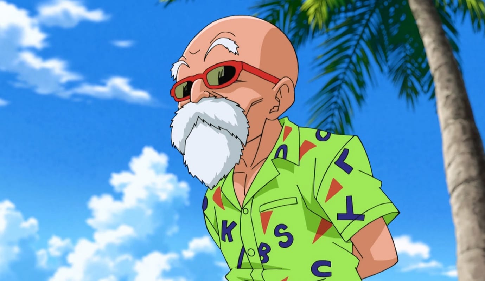
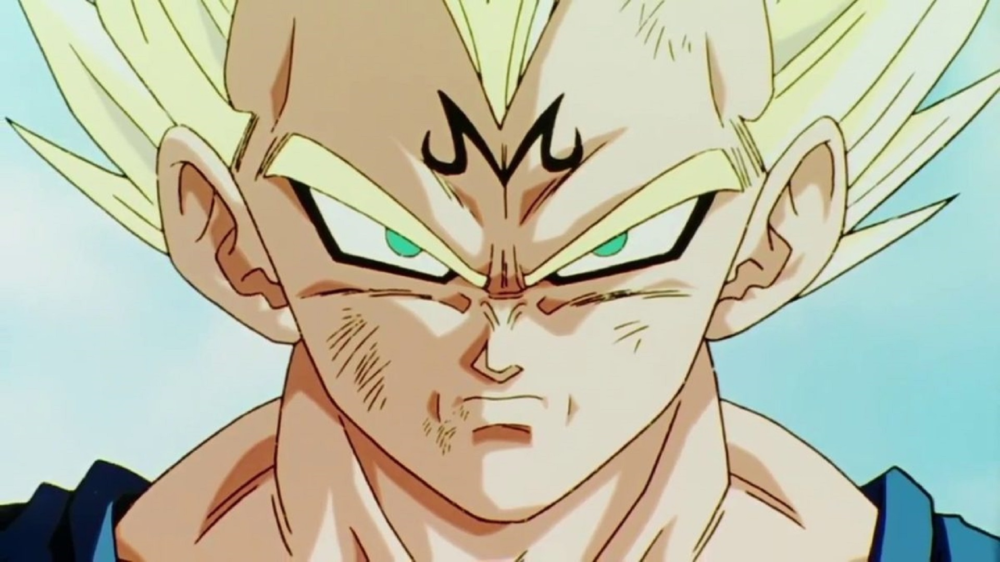
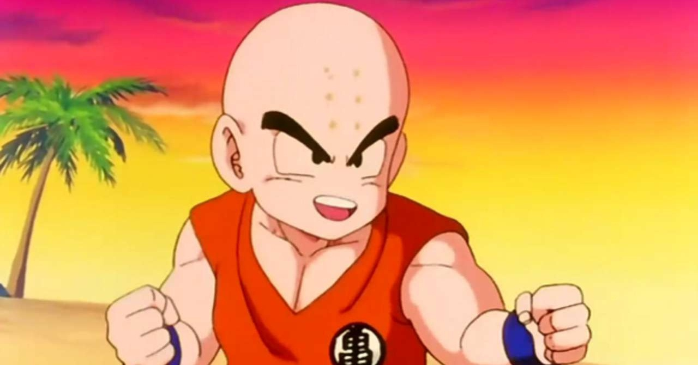
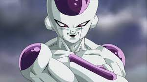
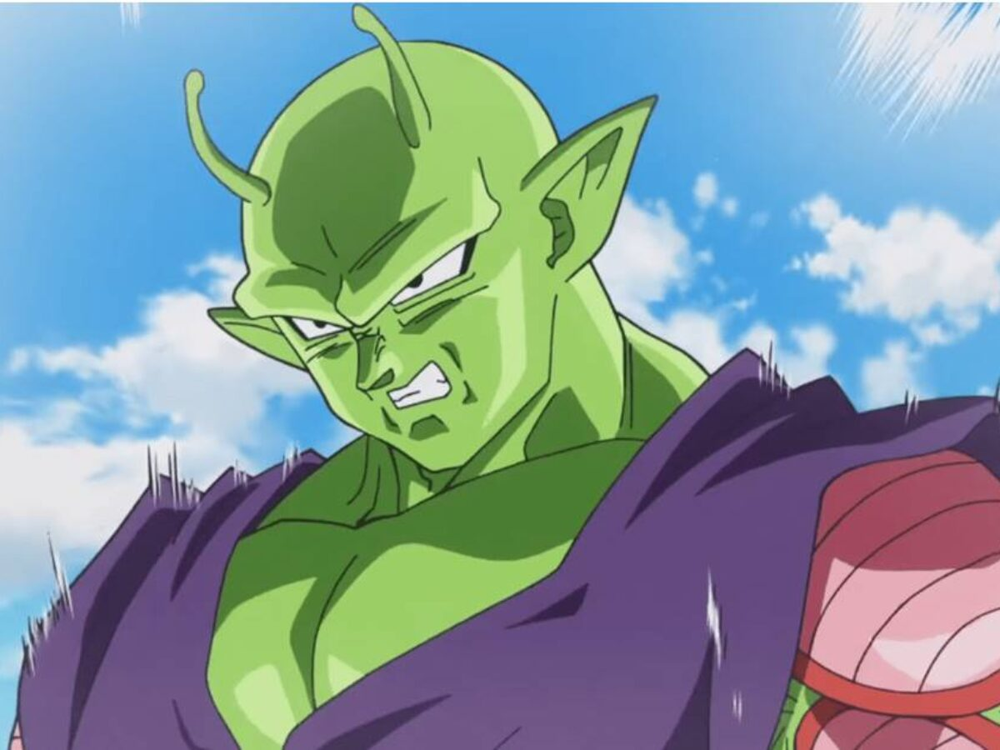

Personagens da Obra

Originalmente batizado como Kakarotto (カカロット), Goku é membro de
uma raça fictícia de extraterrestres, os Saiyajins. Logo após seu nascimento,
Goku é enviado à Terra por seus pais Bardock e Gine para sobreviver à destruição
do Planeta Vegeta, como revelado em Dragon Ball Super: Broly. Ao longo de sua jornada,
Goku faz vários amigos e luta contra uma grande variedade de vilões,
muitos dos quais também procuram as Esferas do Dragão.

Mestre Kame, também conhecido no mangá como Muten Roshi,
é um personagem e protagonista de suporte da franquia Dragon Ball
Mestre Kame é um antigo e sábio mestre de artes marciais, e o primeiro
personagem a usar o conhecido Kamehameha.
Embora ele pareça frágil, Kame é na verdade um guerreiro poderoso.
é um antigo e sábio mestre de artes marciais, e o primeiro personagem a usar o conhecido Kamehameha.

Príncipe Vegeta é o príncipe da raça Saiyajin e arqui-rival de Goku.
Ele é o filho mais velho de Vegeta III, o irmão mais velho de Tarble,
o marido de Bulma, o pai de Trunks e Bra, e tataravô de Vegeta Jr.
Para além de ser um dos protagonistas da saga Dragon Ball,
Vegeta é o príncipe da quase extinta raça Saiyajin.
Ele é o filho mais velho do Rei Vegeta, o irmão mais velho de Tarble, o marido de Bulma e pai de Trunks.
Ao lado de Goku, Gohan, Piccolo e Kuririn ele é um dos mais importantes.

Kuririn é um protagonista em Dragon Ball. Kuririn teve uma breve rivalidade
com Goku quando se conheceram e treinaram com Mestre Kame, mas eles logo viraram
melhores amigos. Um dos mais poderosos e talentosos Terráqueos,
Kuririn é corajoso, um aliado fiel e bom.

Freeza é o Imperador do Universo 7, detentor de um gigantesco
exército imperial que espalhava medo por toda a galáxia.
Ele tinha um ódio em particular pela raça Saiyajin,
algo que foi passando por toda a sua família,
fazendo dele um dos maiores inimigos de Goku.

Piccolo é tratado como sendo do sexo masculino,
mas como é um Namekuseijin, na verdade não tem sexo.
Após ser derrotado por Goku, ele se une ao mesmo
para conseguir derrotar novas ameaças.
Ele também treina o primeiro filho de Goku,
Gohan, e forma uma ligação muito forte com o garoto.
Site desenvolvido por Dário Klein